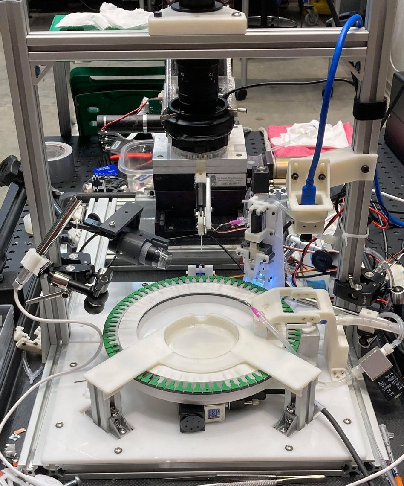
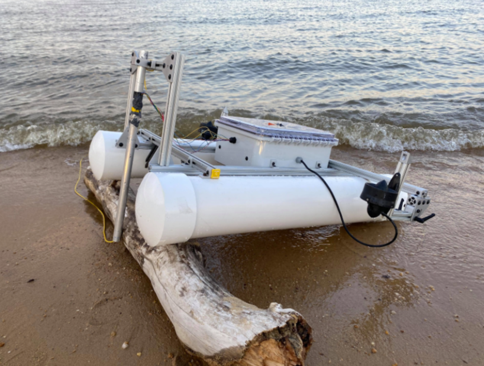
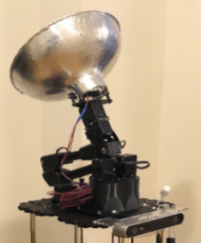

Hello! My name is Miles Liu. I recently graduated from Johns Hopkins
University with a B.S. in Mechanical Engineering, and I am currently
working towards a Master of Science in Engineering in Robotics at the
JHU Laboratory for Computational and Sensory Robotics, expecting to graduate in 2022.
I currently work as an Engineering Associate with the amazing team at
the startup company
ClearMask, LLC, where my
main responsibilities include development, testing, and maintenance of
new products, external webpages, and internal digital data and
operational platforms.
While you are here, check out this game I've been working on with my
friends: Wikispeedruns.
My Featured Projects
Full project list can be found
HERE
Sanaria Robot
Automation of mosquito salivary gland collection.
OCEAN21 VTA
Autonomous surface vehicle for ROV testing
Wikispeedruns
Online competitive browser game based on Wikipedia
DECON
Autonomous disinfection robot for hospitals

Sanaria robot - automation of mosquito salivary gland
collection
Sanaria Inc.'s malaria vaccine has the potential to eliminate
one of the world's deadliest diseases. However, the vaccine
relies on mosquito salivary gland for its production, and the
current extract process is completely manual and highly labor
intensive.
This project aims to build an automated mosquito dissection robot platform that can automate this process, to improve overall vaccine production efficiency.


OCEAN21 - Autonomous surface vehicle for underwater ROV
testing
Small underwater ROVs (Remote Operated Vehicle) communicate
with ground control through a long fiber-optic cable, which
can be costly to use during testing.
Our prototype is an autonomous surface vehicle that follows
the ROV to facilitate wireless to wired communication
without introducing additional drag to the ROV system.
Wikispeedruns - Wikipedia based online competitive browser
game
Goal of the game is very simple: Try to get from one
wikipedia page to another as fast as possible!
Test your obscure trivia knowledge and websurfing prowess
against other players on the leaderboard.

DECON - Autonomous disinfection robot for hospitals
Healthcare Associated Infections (HAIs) pose serious health
risks for patients in healthcare facilities, but can be
prevented through routine disinfection and good hygiene
protocols.
Our solution for further decreasing infection rates is with
an autonomous robot platform that disinfects contamination
hot-spots in healthcare facilities without disrupting
existing workflow.